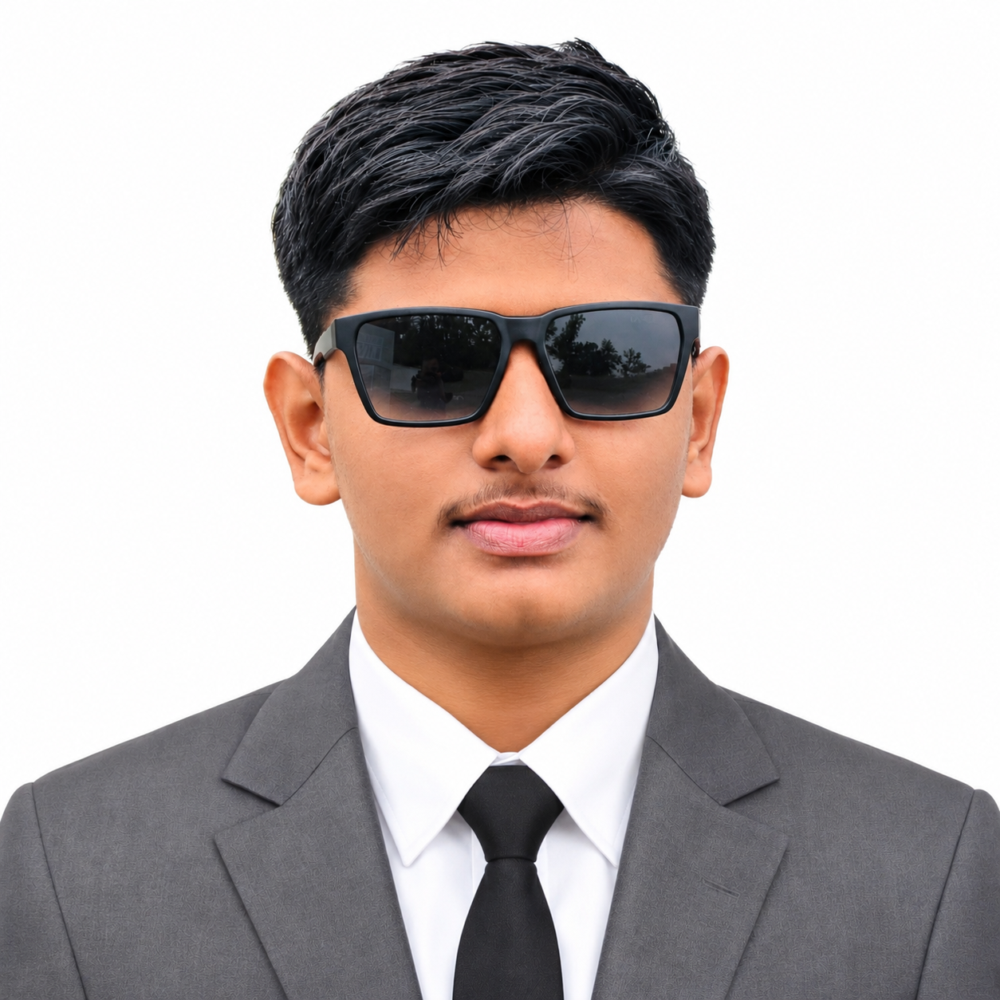

Front-End Developer · Orion International Campus
Built engaging, responsive web interfaces with attention to usability, performance, and accessibility. Collaborated across design and development to support the campus’s digital presence.
I am Anzar Afeek Abdullah
I turn complex ideas into thoughtful software and engaging digital experiences. Bringing code, creativity, and a problem-solving mindset to every project.

WHAT I DO
I bring your ideas to life through practical development and design
that puts people at the center.
Responsive websites and applications built around your goals.
02Clear interfaces. Thoughtful interactions. A better digital experience.
03Visual identities and creative content that help your ideas stand out.
04Practical software and Python solutions for real-world problems.
Built engaging, responsive web interfaces with attention to usability, performance, and accessibility. Collaborated across design and development to support the campus’s digital presence.
Recognized with a gold medal for best performance in web development and design, combining technical ability, creativity, and problem solving.
As CPL Afeek Abdullah Anzar, took part in the Headquarters Assessment Camp, demonstrating discipline, leadership, and dedication through drills, strategic exercises, and team activities.
Continuing my education while developing skills in design, software, and technology.
Completed Books One through Four of the Ma’aariful Wahy series at the Institute of Dawa Islamiyaa, All Ceylon Jamiyyath Ulama.
Completed three years of study at PLITS, Nintavur, under Mr. A.A. Dheen Mohamed, including the First Semester, Second Semester, and Third Book.
Achieved 140 marks in the Grade 5 Scholarship Examination, with guidance from Anees Sir.
MY TOOLBOX
Creative thinking meets technical know-how.
These are some of the tools and disciplines I work with.
BEHIND THE CODE
I'm a student, developer, and designer from Nintavur, Sri Lanka. From responsive websites to databases and networking, I enjoy connecting ideas and finding better ways to make things work.
Get to know meHAVE A PROJECT IN MIND?
Tell me about your idea. Let's make something meaningful.
All contact details